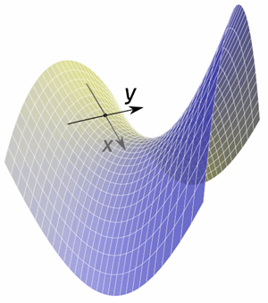
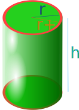
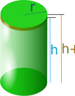
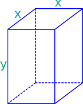
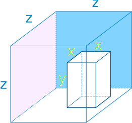

Partial Derivatives
A Partial Derivative is a derivative where we hold some variables constant. Like in this example:

Example: a function for a surface that depends on two variables x and y
When we find the slope in the x direction (while keeping y fixed) we have found a partial derivative.
Or we can find the slope in the y direction (while keeping x fixed).
Let's first think about a function of one variable (x):
f(x) = x2
We can find its derivative using the Power Rule:
f’(x) = 2x
But what about a function of two variables (x and y):
f(x, y) = x2 + y3
We can find its partial derivative with respect to x when we treat y as a constant (imagine y is a number like 7 or something):
f’x = 2x + 0 = 2x
Explanation:
- the derivative of x2 (with respect to x) is 2x
- we treat y as a constant, so y3 is also a constant (imagine y=7, then 73=343 is also a constant), and the derivative of a constant is 0
To find the partial derivative with respect to y, we treat x as a constant:
f’y = 0 + 3y2 = 3y2
Explanation:
- we now treat x as a constant, so x2 is also a constant, and the derivative of a constant is 0
- the derivative of y3 (with respect to y) is 3y2
That is all there is to it. Just remember to treat all other variables as if they are constants.
Holding A Variable Constant
So what does "holding a variable constant" look like?

Example: the volume of a cylinder is V = π r2 h
We can write that in "multi variable" form as
f(r, h) = π r2 h
For the partial derivative with respect to r we hold h constant, and r changes:

f’r = π (2r) h = 2πrh
(The derivative of r2 with respect to r is 2r, and π and h are constants)
It says "as only the radius changes (by the tiniest amount), the volume changes by 2πrh"
It is like we add a skin with a circle's circumference (2πr) and a height of h.
For the partial derivative with respect to h we hold r constant:

f’h = π r2 (1)= πr2
(π and r2 are constants, and the derivative of h with respect to h is 1)
It says "as only the height changes (by the tiniest amount), the volume changes by πr2"
It is like we add the thinnest disk on top with a circle's area of πr2.
Let's see another example.
Example: The surface area of a square prism.

The surface includes the top and bottom with areas of x2 each, and 4 sides of area xy each:
f(x, y) = 2x2 + 4xy
f’x = 4x + 4y
f’y = 0 + 4x = 4x
Three or More Variables
We can have 3 or more variables. Just find the partial derivative of each variable in turn while treating all other variables as constants.
Example: The volume of a cube with a square prism cut out from it.

f(x, y, z) = z3 − x2y
f’x = 0 − 2xy = −2xy
f’y = 0 − x2 = −x2
f’z = 3z2 − 0 = 3z2
When there are many x's and y's it can get confusing, so a mental trick is to change the "constant" variables into letters like "c" or "k" that look like constants.
Example: f(x, y) = y3sin(x) + x2tan(y)
It has x's and y's all over the place! So let us try the letter change trick.
With respect to x we can change "y" to "k":
f(x, y) = k3sin(x) + x2tan(k)
f’x = k3cos(x) + 2x tan(k)
But remember to turn it back again!
f’x = y3cos(x) + 2x tan(y)
Likewise with respect to y we turn the "x" into a "k":
f(x, y) = y3sin(k) + k2tan(y)
f’y = 3y2sin(k) + k2sec2(y)
f’y = 3y2sin(x) + x2sec2(y)
But only do this if you have trouble remembering, as it is a little extra work.
Notation: we have used f’x to mean "the partial derivative with respect to x", but another very common notation is to use a funny backwards d (∂) like this:
∂f∂x = 2x
Which is the same as:
f’x = 2x
∂ is called "del" or "dee" or "curly dee"
So ∂f ∂x can be said "del f del x"
Example: find the partial derivatives of f(x, y, z) = x4 − 3xyz using "curly dee" notation
f(x, y, z) = x4 − 3xyz
∂f∂x = 4x3 − 3yz
∂f∂y = −3xz
∂f∂z = −3xy
You might prefer that notation, it certainly looks cool.